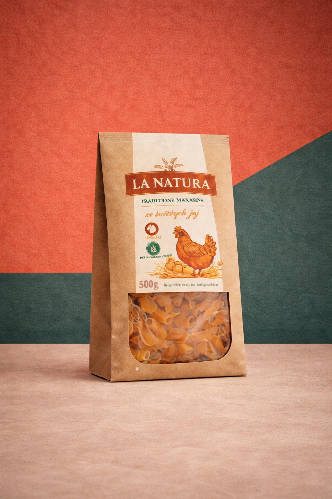

Veri Destekli Ambalaj Kararları
Ambalajı malzeme ve görsel kararların birlikte çalıştığı ölçülebilir bir satış sistemi olarak ele alıyoruz.
AI destekli veri altyapımızla; makarna, granola ve kuru gıda kategorisinde hangi malzeme yapısının, formun ve görsel yaklaşımın raf üzerindeki tercih olasılığını artıracağını analiz ediyoruz.